본 포스트는 서울대학교 컴퓨터공학부 시스템 프로그래밍(System Programming, M1522.000800, Fall 2026) 강의 자료 중 18강 — Network Programming: Webservices (총 46장)를 바탕으로, 강의를 처음 듣는 독자도 논리적 흐름을 따라갈 수 있도록 재구성한 것입니다. 16강(Computer Networks)과 17강(Programmer’s View)이 네트워크의 구조와 소켓 인터페이스를 다졌다면, 이 강의는 그 위에서 돌아가는 가장 대표적인 응용인 웹을 다룹니다. 원본 슬라이드는 영문으로 작성되어 있고, 본문의 대섹션은 개요 슬라이드(History of the World Wide Web (self study) → The HyperText Transfer Protocol → Tiny Web Server → Proxies → Summary)와 다섯 장의 구분 슬라이드를 따랐습니다. HTTP/2와 HTTP/3을 다루는 다섯 장은 별도의 구분 슬라이드 없이 Proxies 단원의 조건부 GET 뒤에 이어지므로, 슬라이드 순서대로 4장의 마지막 세 절로 두었습니다. Tiny Web Server 단원은 슬라이드가 밝히는 대로 교재 Bryant & O’Hallaron, Computer Systems: A Programmer’s Perspective (3rd ed.) 11.6절의 Tiny 웹 서버를 다루고, HTTP와 프록시 단원은 요청 메시지 예제의 호스트
www-net.cs.umass.edu에서 보듯 Kurose & Ross, Computer Networking: A Top-Down Approach 2장(응용 계층)의 강의 슬라이드를 바탕으로 한 것으로 보입니다. HTTP 요청 · 응답 메시지 예제(18 · 21번 슬라이드)는 PDF에서 애니메이션용 흰 상자에 가려 보이지 않으므로, 예제 텍스트는 PDF의 텍스트 층에서 옮겨 적고 그림은 흰 상자만 지워 다시 렌더링했습니다. 강의 자료(.pptx)에 숨김 슬라이드는 없으며, 3 · 33 · 34 · 42번 슬라이드의 발표자 노트는 해당 위치에서 함께 소개합니다. 슬라이드에 적힌 RFC 번호와 발행일 가운데 RFC Editor의 기록과 다른 것(39 · 46번 슬라이드)은 해당 위치에서 바로잡았습니다.
한 줄 요약 (TL;DR)
“웹은 TCP 위에서 사람이 읽을 수 있는 요청과 응답을 주고받는 상태 없는 프로토콜 HTTP로 돌아가고, HTTP/1.1까지의 웹 서버는 파일을 복사해 주거나(정적) 프로그램을 fork/exec해 그 출력을 넘겨주는(동적) 몇백 줄짜리 프로그램으로 구현할 수 있으며, 캐시와 새 HTTP 버전은 모두 객체를 받아 오는 지연을 줄이려는 장치입니다.”
웹 페이지는 기본 HTML 파일과 그것이 참조하는 객체들로 이루어지고, 각 객체는 스킴 · 호스트 이름 · 경로 이름으로 된 URL로 지목되며, 브라우저(HTTP 클라이언트)와 웹 서버는 포트 80의 TCP 연결 위에서 요청 줄(응답이면 상태 줄) · 헤더 줄 · 빈 줄 · 본문으로 된 ASCII 메시지를 주고받으며, 서버는 지난 요청을 기억하지 않습니다(stateless). 객체마다 연결을 새로 여는 비지속 HTTP는 객체당 2RTT + 파일 전송 시간이 들고, HTTP/1.1의 지속 HTTP는 연결을 재사용해 참조 객체 전체를 최소 1 RTT 만에 받아 올 수 있습니다. 교재의 Tiny 웹 서버는 요청 줄을 method · uri · version으로 나누어, URI에
cgi-bin이 있으면 자식 프로세스에서 CGI 프로그램을 실행해 그 출력을 돌려주고(동적 콘텐츠), 아니면 파일을mmap으로 읽어 그대로 소켓에 씁니다(정적 콘텐츠). 웹 캐시(프록시 서버)는 클라이언트에게는 서버로, 원 서버에게는 클라이언트로 행동하며, 예제에서는 적중률 0.4만으로 접속 회선 이용률을 0.97에서 0.58로 낮추고 평균 지연을 154 Mbps 회선보다 짧은 약 1.2초로 줄입니다. 조건부 GET은 브라우저의 사본이 최신이면 객체 전송을 생략하게 하고, HTTP/2는 객체를 프레임으로 나누어 섞어 보냄으로써 큰 객체 뒤에 작은 객체가 줄 서는 HOL 블로킹을 완화하며, HTTP/3은 UDP 위에서 보안과 혼잡 제어, 객체별 오류 제어를 더합니다.
1. 월드 와이드 웹의 역사 (History of the World Wide Web)
개요 슬라이드는 이 장에 (self study), 즉 스스로 읽어 둘 부분이라는 표시를 붙여 두었습니다. 웹이라는 응용이 어떤 착상에서 나와 얼마나 빠르게 퍼졌는지를 훑어보는 장이며, 2장부터의 기술적 내용을 이해하는 데 필요한 배경입니다.
1.1 1945년: 메멕스 (A Bit of Web History: 1945)
웹의 핵심 착상인 하이퍼텍스트(hypertext), 즉 문서와 문서를 링크로 이어 두는 생각은 컴퓨터 네트워크보다 훨씬 오래되었습니다.
- 1945년: 버니바 부시(Vannevar Bush)가 Atlantic Monthly 1945년 7월호에 “As We May Think”를 발표합니다.
- 분산 하이퍼텍스트 시스템(distributed hypertext system)의 착상을 묘사한 글입니다.
- 우리 머릿속의 “자취의 망(web of trails)”을 흉내 내는 장치 메멕스(memex)를 제안합니다.
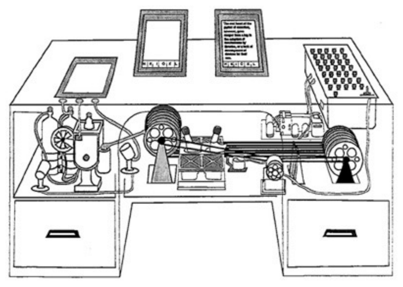
슬라이드 오른쪽에는 글의 한 대목이 인용되어 있습니다. 그 내용을 우리말로 풀면 다음과 같습니다.
- 개인이 쓰는 미래의 장치로, 일종의 기계화된 개인 서류철이자 서재를 생각해 보자. 이름이 필요하니 아무렇게나 붙여 “메멕스”라고 하자.
- 메멕스는 한 사람이 자신의 책 · 기록 · 통신을 모두 저장해 두는 장치이며, 엄청난 속도와 유연성으로 그것을 찾아볼 수 있도록 기계화되어 있다.
- 그것은 그 사람의 기억을 확장하는 친밀한 보조물이다.
이 착상에서 웹으로 이어지는 것은 “저장”보다 “연결” 쪽입니다. 부시가 말한 자취는 한 항목에서 연관된 다른 항목으로 건너가는 길이고, 1.2절의 “링크로 이어진 메모의 망”과 2장의 URL이 바로 그 길을 기계가 따라갈 수 있게 만든 것입니다.
1.2 1989–1994년: 웹의 탄생과 확산 (A Bit of Web History: 1989–1994)
| 연도 | 사건 |
|---|---|
| 1989 | CERN의 팀 버너스리(Tim Berners-Lee)가 분산 하이퍼텍스트 시스템을 개발하자는 내부 제안서를 씁니다. “링크로 이어진 메모의 망(a web of notes with links)”을 잇는 시스템으로, 큰 프로젝트에 참여하는 CERN 물리학자들이 정보를 공유하고 관리하도록 돕기 위한 것이었습니다 |
| 1990 | 팀 버너스리가 NeXT 기계용 그래픽 브라우저를 작성합니다 |
| 1992 | NCSA 서버가 공개됩니다. 전 세계의 WWW 서버는 26대였습니다 |
| 1993 | 마크 앤드리슨(Marc Andreessen)이 NCSA Mosaic 브라우저의 첫 버전을 공개하고, Windows · Mac · Unix용 Mosaic이 나옵니다. 웹(포트 80) 트래픽이 NSFNET 백본 트래픽의 1%에 이르고, WWW 서버는 200대를 넘습니다 |
| 1994 | 앤드리슨과 동료들이 NCSA를 떠나 “Mosaic Communications Corp”를 세웁니다. 넷스케이프(Netscape)의 전신입니다 |
- 1992년의 26대에서 1993년의 200대 이상으로, 서버 수가 한 해 만에 여덟 배 가까이 늘었습니다. 여러 운영체제에서 돌아가는 그래픽 브라우저가 등장하자 웹이 연구소 밖으로 퍼지기 시작한 것입니다.
- NSFNET은 미국 국립과학재단(NSF)이 운영하던 당시 인터넷의 백본 망입니다. 괄호 속 포트 80은 16강 2.7.1절에서 본 웹 서버의 잘 알려진 포트이므로, “포트 80 트래픽”이 곧 웹 트래픽을 뜻합니다.
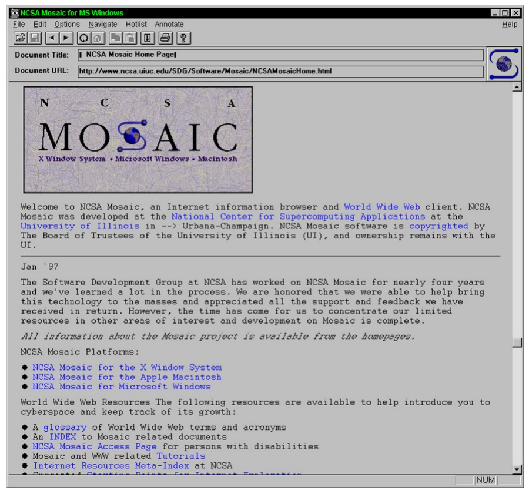
http://www.ncsa.uiuc.edu/SDG/Software/Mosaic/NCSAMosaicHome.html이 보이는데, 이 주소가 2.1절에서 볼 URL의 모양 그대로입니다. 본문에는 “X Window System • Microsoft Windows • Macintosh”라고 적힌 MOSAIC 로고가 있어 슬라이드의 “Windows, Mac, Unix용”과 맞아떨어지며, 파란 글씨로 된 “World Wide Web”, “National Center for Supercomputing Applications” 같은 구절이 다른 문서로 건너가는 링크입니다. 그 아래 “Jan ’97” 공지는 NCSA가 4년 가까이 이어 온 Mosaic 개발을 마쳤다고 알리고 있으므로, 이 화면은 1993년 첫 공개 때가 아니라 1997년 이후에 찍힌 것입니다.1.3 웨이백 머신 (A Bit of Web History: The Internet Archive’s Wayback Machine)
인터넷 아카이브(Internet Archive)의 웨이백 머신(Wayback Machine)(archive.org/web)은 웹 페이지의 스냅샷을 시간에 따라 저장해 둡니다. 슬라이드는 이것으로 익숙한 기업 · 기관의 초기 웹 페이지를 찾아볼 수 있다며 링크를 모아 두었습니다.
| 대상 | 슬라이드의 링크 (스냅샷 날짜) |
|---|---|
| Microsoft | history of Microsoft webpages |
| first public website (1998/11/11), early interface (1998/12/02) | |
| Samsung | earliest available page (1996/11/14), about 23 years ago (1997/12/10) |
| Hyundai | earliest available page (1998/12/03), 20 years ago (2000/11/17) |
| LG | about 20 years ago (2001/07/21) |
| 서울대학교 | SNU (1996/12/19), College of Engineering (1996/11/20), Department of Computer Engineering (1996/12/16), CSE (2000/05/10) |
| 청와대 (Office of the President) | earliest available page (2000/08/16) |
- “about 23 years ago”, “20 years ago” 같은 링크 문구는 슬라이드를 만든 시점을 기준으로 한 표현이므로, 함께 적힌 스냅샷 날짜로 읽는 편이 정확합니다.
- Microsoft 항목만은 웨이백 머신이 아니라 Version Museum이라는 사이트의 연대기로 연결되고, LG 항목의 링크는 옛 이름 럭키금성(Lucky-Goldstar)의 도메인
luckygoldstar.com을 가리킵니다. - 웨이백 머신의 주소는
web.archive.org/web/<저장 시각>/<원래 URL>꼴이어서, 표의 날짜는 각 링크 주소 속 14자리 저장 시각의 앞 8자리와 같습니다.
1.4 IPv4 인터넷 호스트 (IPv4 Internet Hosts)
웹이 퍼진 결과는 인터넷에 붙은 호스트의 수로도 드러납니다.
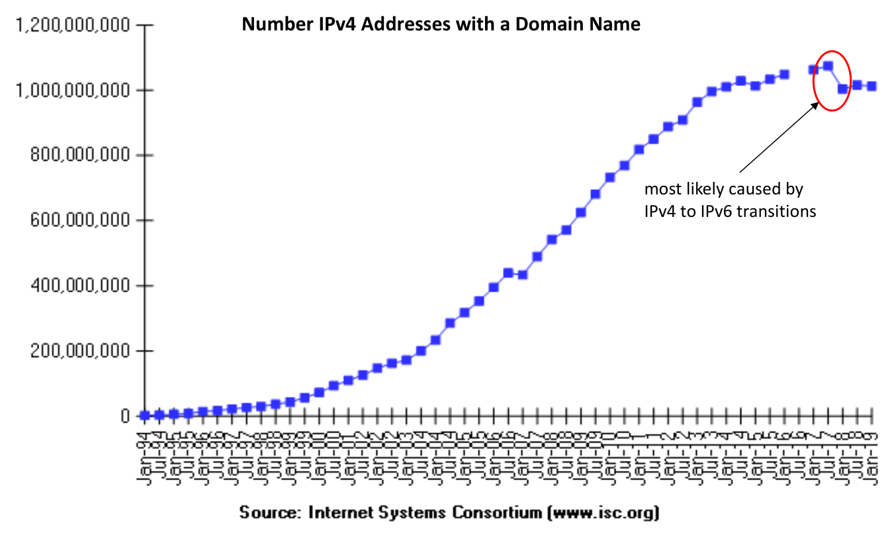
- 그래프는 도메인 이름이 붙은 IPv4 주소의 수를 셉니다. 1990년대 중반의 거의 0에서 출발해 2010년대 중반에는 약 10억 개에 이르렀습니다.
- 16강 2.4절에서 본 IPv4 주소 공간은 \(2^{32} \approx 4.3 \times 10^{9}\)개이므로, 10억 개는 그 4분의 1에 조금 못 미치는 약 23%입니다.
- 끝부분의 감소에 대해 슬라이드는 IPv6로의 전환이 가장 그럴듯한 원인이라고 해석합니다.
- 슬라이드 하단의 각주대로 이 자료는 Internet Systems Consortium의 조사(https://www.isc.org/network/survey/)이며, 조사는 2019년 1월에 중단되었습니다. 그래프가 2019년에서 끝나는 이유입니다.
2. 하이퍼텍스트 전송 프로토콜 (The HyperText Transfer Protocol)
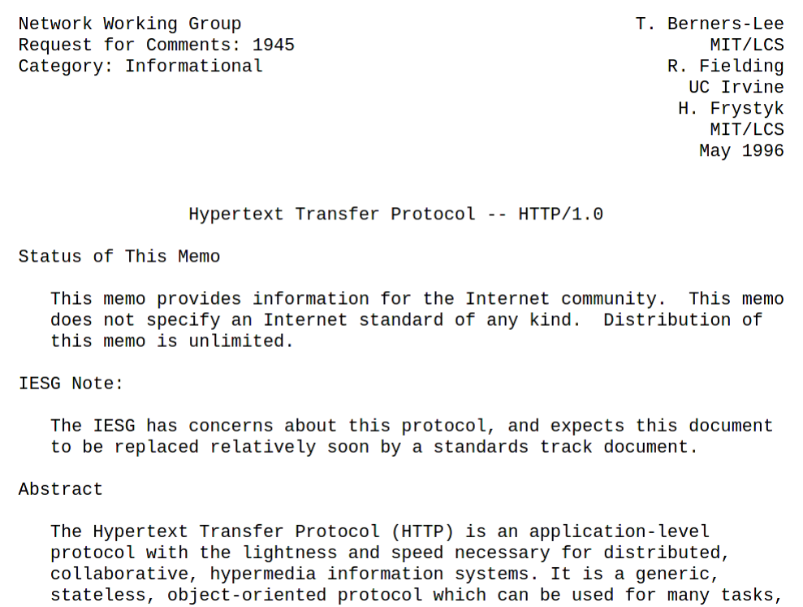
이제 웹이 실제로 어떤 규칙으로 돌아가는지 봅니다. 그 규칙이 HTTP(HyperText Transfer Protocol, 하이퍼텍스트 전송 프로토콜)입니다.
2.1 웹과 HTTP (Web and HTTP)
슬라이드는 “먼저 간단히 되짚어 보자(First, a quick review…)”라며 웹 페이지의 구성부터 정리합니다.
- 웹 페이지는 객체(object)들로 이루어지며, 각 객체는 서로 다른 웹 서버에 저장되어 있을 수 있습니다.
- 객체는 HTML 파일, JPEG 이미지, 자바 애플릿, 오디오 파일 등 무엇이든 될 수 있습니다.
- 웹 페이지는 기본 HTML 파일(base HTML-file)과, 그 파일이 참조하는 여러 객체(several referenced objects)로 이루어지며, 각 객체는 URL로 지목할 수 있습니다(addressable).
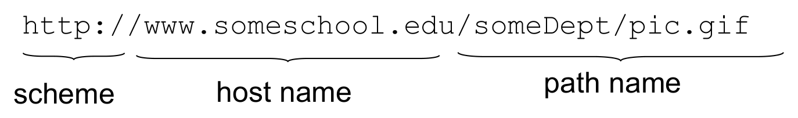
http://www.someschool.edu/someDept/pic.gif 아래에 가로로 누운 중괄호 세 개가 놓여, 앞부분 http://를 scheme(스킴), 가운데 www.someschool.edu를 host name(호스트 이름), 뒷부분 /someDept/pic.gif를 path name(경로 이름)으로 나눕니다. 호스트 이름은 16강의 DNS가 IP 주소로 바꾸어 줄 대상이고 경로 이름은 그 호스트 안에서 객체를 가리키므로, URL 하나가 “어느 서버의 어느 객체를 어떤 방식으로 가져올지”를 한 번에 지정한다는 것이 이 그림의 요점입니다.| 부분 | 예 | 뜻 |
|---|---|---|
| 스킴 (scheme) | http:// |
객체를 가져올 방식(프로토콜). http이면 따로 적지 않는 한 포트 80으로 접속합니다 |
| 호스트 이름 (host name) | www.someschool.edu |
객체를 가진 서버. 16강 2.6절의 DNS가 이 이름을 IP 주소로 바꿉니다 |
| 경로 이름 (path name) | /someDept/pic.gif |
그 서버 안에서 객체의 위치 |
- 그래서 브라우저가 페이지 하나를 보여 주려면, 먼저 기본 HTML 파일을 받아 그 안에서 참조된 객체들의 URL을 찾고, 그 객체들을 다시 하나씩 받아 와야 합니다. 2.4절의 예가 바로 이 과정입니다.
2.2 HTTP 개요 (HTTP overview)
- HTTP는 웹의 응용 계층 프로토콜(application-layer protocol)입니다. 16강 2.2절의 그림으로 말하면, HTTP는 맨 위 칸인 사용자 코드(브라우저와 웹 서버 프로세스)에서 구현되고, 그 아래의 TCP/IP는 커널이 맡습니다.
- 클라이언트-서버 모델(client/server model)을 따릅니다(16강 1.1절).
- 클라이언트: HTTP 프로토콜을 이용해 웹 객체를 요청하고, 받고, “보여 주는(displays)” 브라우저입니다.
- 서버: 요청에 응답해 HTTP 프로토콜로 객체를 보내는 웹 서버입니다.
2.2.1 HTTP는 TCP를 씁니다 (HTTP uses TCP)
슬라이드가 나열하는 네 단계는 16강 2.8.3절에서 본 소켓 인터페이스의 흐름과 그대로 맞물립니다.
| 슬라이드의 단계 | 소켓 인터페이스로 보면 |
|---|---|
| 클라이언트가 서버의 포트 80으로 TCP 연결을 시작한다(소켓을 만든다) | 클라이언트의 socket → connect |
| 서버가 클라이언트의 TCP 연결을 받아들인다 | 서버의 accept |
| 브라우저(HTTP 클라이언트)와 웹 서버(HTTP 서버)가 HTTP 메시지(응용 계층 프로토콜 메시지)를 주고받는다 | 양쪽의 write ⇄ read |
| TCP 연결을 닫는다 | close |
- 즉 HTTP는 16강의 신뢰성 있는 바이트 스트림 연결 위에 “어떤 바이트를 어떤 순서로 보낼지”를 정한 약속입니다. 17강의 echo 서버가 연결 위로 문자열을 주고받았다면, 웹 서버는 그 자리에서 HTTP 메시지를 주고받습니다.
2.2.2 HTTP는 상태가 없습니다 (HTTP is “stateless”)
- 서버는 지난 클라이언트 요청에 관한 정보를 전혀 유지하지 않습니다. 같은 클라이언트가 같은 객체를 두 번 연달아 요청해도, 서버는 두 번째 요청을 처음 받은 요청처럼 처리합니다.
슬라이드는 빨간 상자의 곁가지(aside)로 그 이유를 덧붙입니다. “상태”를 유지하는 프로토콜은 복잡합니다.
- 지난 이력(상태)을 계속 유지해야 합니다.
- 서버나 클라이언트가 죽으면 양쪽이 알고 있는 “상태”가 서로 어긋날 수 있고, 그것을 다시 맞추어야(reconcile) 합니다.
상태 없는 서버에서는 요청 하나하나가 그 자체로 완결됩니다. 서버가 죽었다가 다시 떠도 맞추어야 할 이력이 없으므로 다음 요청부터 그대로 처리하면 되고, 클라이언트가 중간에 사라져도 정리할 것이 없습니다. 3장의 Tiny가 요청 하나를 처리하고 연결을 닫는 단순한 구조로 충분한 것도, HTTP가 요청과 요청 사이에 아무것도 기억하지 않아도 되는 프로토콜이기 때문입니다.
2.3 HTTP 연결의 두 종류 (HTTP connections: two types)
TCP 연결 하나로 객체를 몇 개 보내느냐에 따라 HTTP 연결은 두 종류로 나뉩니다.
| 비지속 HTTP (non-persistent HTTP) | 지속 HTTP (persistent HTTP) | |
|---|---|---|
| 연결 열기 | TCP 연결을 연다 | 서버로 TCP 연결을 연다 |
| 연결 하나로 보내는 객체 | 많아야 한 개 | 그 클라이언트와 그 서버 사이에서 여러 개 |
| 연결 닫기 | TCP 연결을 닫는다 | TCP 연결을 닫는다 |
| 결과 | 객체 여러 개를 받으려면 연결도 여러 개 필요하다 | 한 연결을 재사용한다 |
2.4 비지속 HTTP의 예 (Non-persistent HTTP: example)
사용자가 URL www.someSchool.edu/someDepartment/home.index를 입력했다고 합시다. 이 페이지는 본문 텍스트와 JPEG 이미지 10개에 대한 참조를 담고 있습니다.
| 단계 | 주체 | 하는 일 |
|---|---|---|
| 1a | 클라이언트 | HTTP 클라이언트가 www.someSchool.edu의 HTTP 서버(프로세스)에 포트 80으로 TCP 연결을 시작합니다 |
| 1b | 서버 | 포트 80에서 TCP 연결을 기다리던 HTTP 서버가 연결을 “받아들이고(accepts)” 클라이언트에 알립니다 |
| 2 | 클라이언트 | URL을 담은 요청 메시지(request message)를 TCP 연결 소켓에 보냅니다. 메시지는 클라이언트가 객체 someDepartment/home.index를 원한다는 것을 나타냅니다 |
| 3 | 서버 | 요청 메시지를 받아, 요청된 객체를 담은 응답 메시지(response message)를 만들어 자기 소켓에 보냅니다 |
| 4 | 서버 | TCP 연결을 닫습니다 |
| 5 | 클라이언트 | HTML 파일을 담은 응답 메시지를 받아 HTML을 보여 주고, HTML 파일을 파싱해 참조된 JPEG 객체 10개를 찾습니다 |
| 6 | 클라이언트 | JPEG 객체 10개 각각에 대해 1–5단계를 반복합니다 |
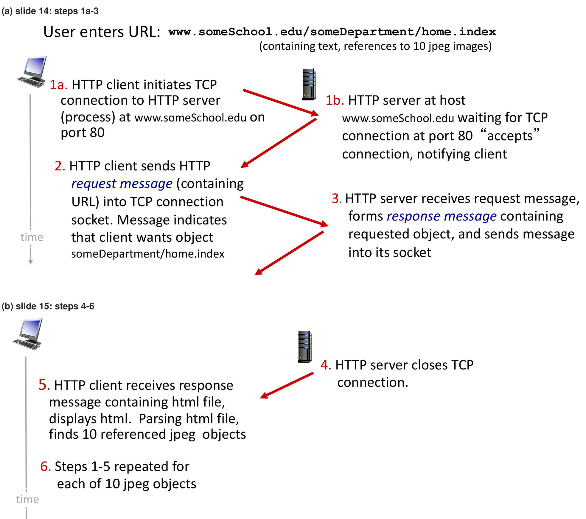
www.someSchool.edu/someDepartment/home.index(본문 텍스트와 JPEG 이미지 10개에 대한 참조를 담은 페이지)를 입력한 상황에서 시작합니다. 왼쪽의 클라이언트 컴퓨터와 오른쪽의 서버 사이를 빨간 화살표가 오가며 1a(클라이언트가 포트 80으로 TCP 연결을 시작) → 1b(서버가 연결을 받아들이고 클라이언트에 알림) → 2(클라이언트가 요청 메시지를 소켓에 보냄) → 3(서버가 요청 객체를 담은 응답 메시지를 소켓에 보냄)의 순서를 그립니다. 아래쪽 (b)는 15번 슬라이드로, 4(서버가 TCP 연결을 닫음) → 5(클라이언트가 HTML 파일을 받아 보여 주고, 파싱해 JPEG 객체 10개의 참조를 찾음) → 6(JPEG 객체 10개 각각에 대해 1–5단계를 반복)이 이어집니다. 왼쪽의 회색 세로 화살표 time은 아래로 갈수록 시간이 흐른다는 뜻이며, 화살표가 비스듬히 기운 것은 메시지가 상대에게 닿는 데 시간이 걸리기 때문입니다. (b)의 맨 위에 있던 URL 줄은 (a)와 같아 잘라 냈습니다.- 6단계에서 1–5단계가 JPEG마다 되풀이되므로, 이 페이지 하나를 보여 주는 데 TCP 연결이 기본 HTML 파일용 1개 + JPEG용 10개 = 11개 열리고 닫힙니다.
- 4단계에서 서버가 먼저 연결을 닫는데도 5단계에서 클라이언트가 응답을 온전히 받을 수 있는 것은, TCP가 이미 보낸 데이터를 모두 전달한 뒤에야 연결의 끝을 알리기 때문입니다. 16강 2.8.3절에서 상대의
close가 데이터를 다 읽은 다음의 EOF로 나타났던 것과 같은 원리입니다.
2.5 비지속 HTTP의 응답 시간 (Non-persistent HTTP: response time)
연결을 객체마다 새로 여는 비용이 얼마인지 시간으로 따져 봅니다. 기준이 되는 단위는 왕복 시간(round-trip time, RTT), 즉 작은 패킷 하나가 클라이언트에서 서버로 갔다가 다시 돌아오는 데 걸리는 시간입니다.
HTTP 응답 시간(객체 하나당)은 세 부분으로 이루어집니다.
- TCP 연결을 시작하는 데 1 RTT
- HTTP 요청을 보내고 HTTP 응답의 첫 몇 바이트가 돌아오는 데 1 RTT
- 객체(파일)의 전송 시간
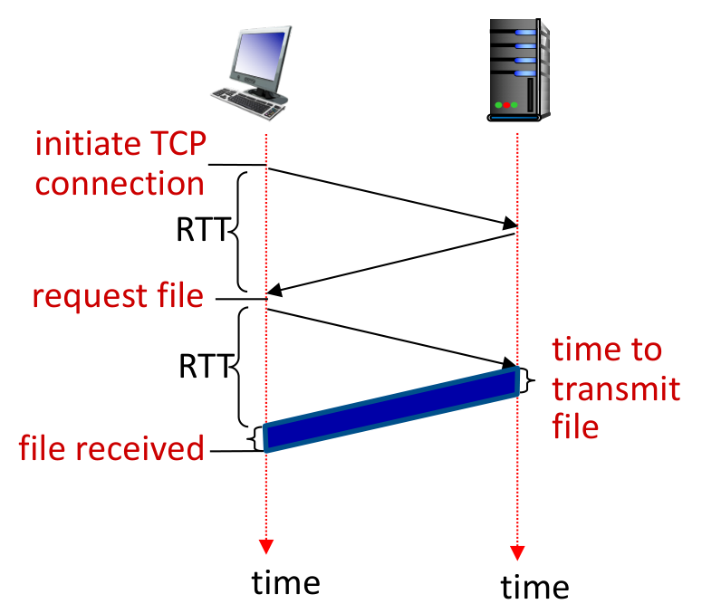
첫 번째 RTT가 생기는 이유는 TCP 연결을 세우는 절차에 있습니다. 클라이언트가 연결 요청 세그먼트를 보내고 서버가 이를 수락하는 세그먼트를 돌려보내면, 클라이언트는 확인 응답을 보내며 연결이 성립합니다(3방향 핸드셰이크, three-way handshake). 앞의 두 단계에 1 RTT가 들고, 클라이언트는 마지막 확인 응답과 함께 HTTP 요청을 실어 보낼 수 있으므로 그다음 RTT가 곧 요청과 응답의 왕복입니다. 16강 2.8.3절의 흐름으로 말하면 클라이언트의 connect가 서버 쪽 커널의 수락을 받고 돌아오기까지가 첫 번째 RTT입니다. 파일 전송 시간을 \(t_{\text{file}}\)로 적으면 다음과 같습니다.
\[ T_{\text{비지속}} = \underbrace{\text{RTT}}_{\text{TCP 연결 설정}} + \underbrace{\text{RTT}}_{\text{요청과 응답 첫 바이트}} + \underbrace{t_{\text{file}}}_{\text{파일 전송}} = 2\,\text{RTT} + t_{\text{file}} \]
비지속 HTTP의 응답 시간 = 2RTT + 파일 전송 시간 (객체 하나당)입니다. 객체가 아무리 작아도 연결 설정에 RTT 하나를 따로 내야 하므로, 작은 객체를 많이 담은 페이지일수록 이 고정 비용이 응답 시간을 지배합니다.
2.6 지속 HTTP (Persistent HTTP (HTTP 1.1))
비지속 HTTP의 문제점 (Non-persistent HTTP issues)
- 객체마다 2 RTT가 필요합니다.
- TCP 연결마다 운영체제의 부담(OS overhead)이 따릅니다. 연결마다 소켓 디스크립터와 커널의 버퍼를 새로 만들고 정리해야 하기 때문입니다.
- 객체마다 2 RTT씩 기다리는 시간을 줄이려고, 브라우저는 참조된 객체들을 병렬로 받는 TCP 연결을 여러 개 동시에 여는 경우가 많습니다. 기다리는 시간은 줄지만 연결마다의 부담은 그대로입니다.
지속 HTTP (HTTP 1.1)
- 서버가 응답을 보낸 뒤에도 연결을 열어 둡니다.
- 같은 클라이언트와 서버 사이의 이후 HTTP 메시지는 열려 있는 연결로 보냅니다.
- 클라이언트는 참조된 객체를 만나는 즉시 요청을 보냅니다.
- 참조된 객체 전체에 대해 RTT 하나만으로도 충분할 수 있습니다(응답 시간을 절반으로 줄임).
2.4절의 페이지(기본 HTML 파일 1개 + JPEG 10개)로 차이를 계산해 보겠습니다. 파일 전송 시간은 빼고 RTT만 세며, 연결은 한 번에 하나만 쓴다고 가정합니다.
| 방식 | 기본 HTML 파일 | JPEG 10개 | 합계 |
|---|---|---|---|
| 비지속 | 2 RTT | \(10 \times 2\) RTT | 22 RTT |
| 지속, 요청을 하나씩 | 2 RTT | \(10 \times 1\) RTT | 12 RTT |
| 지속, 만나는 즉시 연달아 요청 | 2 RTT | 1 RTT | 3 RTT |
- 연결을 재사용하기만 해도 객체마다 연결 설정 RTT가 사라져 객체당 2 RTT가 1 RTT로, 즉 절반으로 줄어듭니다.
- 여기에 더해 클라이언트가 10개의 요청을 응답을 기다리지 않고 연달아 보내면, 첫 응답이 돌아오는 1 RTT 안에 나머지 응답도 이어서 흘러오므로 참조 객체 전체가 최소 1 RTT로 끝납니다. 슬라이드가 “응답 시간을 절반으로”라는 말을 붙인 것은 이 경우입니다. 비지속 HTTP도 병렬 TCP 연결로 참조 객체를 한꺼번에 받으면 연결 설정과 요청에 2 RTT가 드는데, 그와 견주면 1 RTT가 절반이기 때문입니다. 2.7절의 요청 예제에 있는
Connection: keep-alive헤더와 4.5절의 HTTP/1.1 파이프라이닝이 이 방식과 관련됩니다.
2.7 HTTP 요청 메시지 (HTTP request message)
- HTTP 메시지는 두 종류입니다: 요청(request)과 응답(response).
- HTTP 요청 메시지는 ASCII, 즉 사람이 읽을 수 있는 형식입니다.
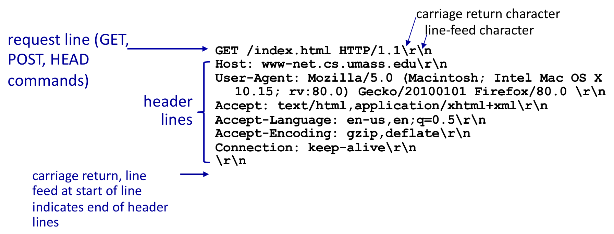
GET /index.html HTTP/1.1\r\n을 왼쪽 위 화살표가 request line (GET, POST, HEAD commands)(요청 줄)이라고 가리키고, 오른쪽 위의 두 화살표는 줄 끝의 \r이 carriage return character(캐리지 리턴 문자), \n이 line-feed character(줄 바꿈 문자)임을 짚습니다. 그 아래 Host부터 Connection까지 여섯 개의 헤더를 왼쪽 중괄호가 header lines(헤더 줄)로 묶으며, User-Agent 값은 지면 때문에 두 줄로 접혀 있습니다. 맨 끝의 \r\n 한 줄은 왼쪽 아래 설명대로 carriage return, line feed at start of line indicates end of header lines, 즉 줄 머리에 곧바로 CR LF가 오는 빈 줄이 헤더 줄의 끝을 알린다는 표시입니다.메시지 본체를 그대로 옮기면 다음과 같습니다. 각 줄 끝의 \r\n은 슬라이드가 줄 끝 문자를 눈에 보이게 적은 표기이고, 슬라이드에서 두 줄로 접힌 User-Agent 값은 한 줄로 이었습니다.
GET /index.html HTTP/1.1\r\n
Host: www-net.cs.umass.edu\r\n
User-Agent: Mozilla/5.0 (Macintosh; Intel Mac OS X 10.15; rv:80.0) Gecko/20100101 Firefox/80.0 \r\n
Accept: text/html,application/xhtml+xml\r\n
Accept-Language: en-us,en;q=0.5\r\n
Accept-Encoding: gzip,deflate\r\n
Connection: keep-alive\r\n
\r\n\r은 캐리지 리턴(CR, ASCII 코드 13 =0x0D),\n은 줄 바꿈(LF, ASCII 코드 10 =0x0A)입니다. HTTP는 모든 줄을 CR LF 두 문자로 끝냅니다.- 요청 줄(request line)은 메서드
GET, 요청 대상/index.html, 버전HTTP/1.1의 세 부분입니다. 요청 줄에는 경로만 있고 호스트 이름은Host헤더에 따로 들어간다는 점에 주의합니다. - 빈 줄, 즉 맨 앞에 곧바로
\r\n이 오는 줄이 헤더 줄의 끝을 알립니다. 받는 쪽은 줄 단위로 읽다가 빈 줄을 만나면 헤더가 끝났다고 판단합니다.
헤더 줄은 이름: 값 꼴이며, 이 예제의 여섯 헤더는 다음과 같은 뜻입니다.
| 헤더 | 값 | 뜻 |
|---|---|---|
Host |
www-net.cs.umass.edu |
요청 대상 호스트. 한 서버(IP 주소)가 여러 사이트를 맡을 수 있으므로 HTTP/1.1에서는 반드시 넣어야 합니다 |
User-Agent |
Mozilla/5.0 (… Firefox/80.0) |
요청을 보낸 브라우저의 종류. macOS 10.15에서 실행되는 Firefox 80입니다 |
Accept |
text/html,application/xhtml+xml |
받아들일 수 있는 객체 형식(MIME 형식) |
Accept-Language |
en-us,en;q=0.5 |
선호하는 언어. q=0.5는 선호도 가중치로, 미국 영어(가중치 1)를 일반 영어(0.5)보다 원합니다 |
Accept-Encoding |
gzip,deflate |
압축된 본문도 받을 수 있다는 표시 |
Connection |
keep-alive |
응답 뒤에도 연결을 열어 두길 원한다는 표시로, 2.6절의 지속 연결과 관련됩니다. HTTP/1.1에서는 지속 연결이 기본값입니다 |
2.7.1 일반 형식 (HTTP request message: general format)
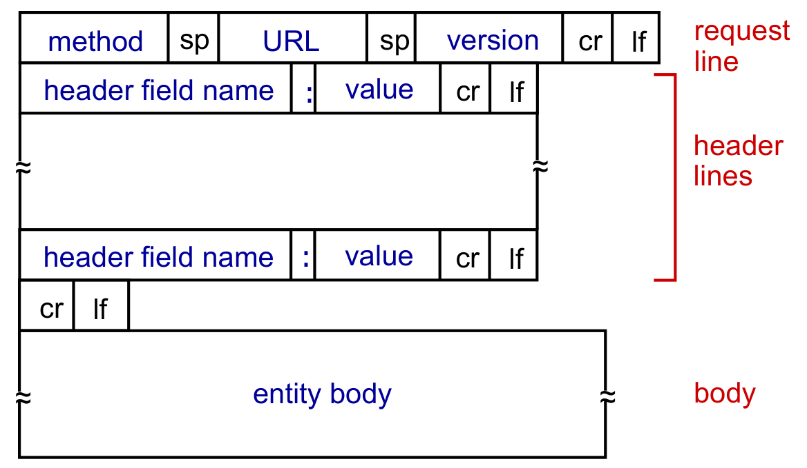
| 부분 | 형식 | 2.7절 예제에서 |
|---|---|---|
| 요청 줄 | method sp URL sp version cr lf | GET /index.html HTTP/1.1\r\n |
| 헤더 줄 (0개 이상) | header field name : value cr lf |
Host: www-net.cs.umass.edu\r\n 등 여섯 줄 |
| 빈 줄 | cr lf | \r\n |
| 본문 | entity body | 없음 (GET 요청) |
- 요청 줄의 세 부분이 공백(sp) 하나로 구분되므로, 받는 쪽은 첫 줄을 공백 기준으로 잘라 메서드 · URL · 버전을 얻을 수 있습니다. 3.2절의 Tiny가 요청을 이렇게 나눕니다.
- 본문은 GET 요청에서는 비어 있고, 다음 절의 POST처럼 클라이언트가 서버로 데이터를 실어 보낼 때 쓰입니다.
2.8 그 밖의 요청 메시지 (Other HTTP request messages)
| 메서드 | 쓰임 | 데이터가 실리는 곳 |
|---|---|---|
| POST | 웹 페이지에는 폼(form) 입력이 들어 있는 경우가 많고, 사용자의 입력을 클라이언트에서 서버로 보냅니다 | HTTP POST 요청 메시지의 본문(entity body) |
| GET (서버로 데이터를 보낼 때) | 사용자 데이터를 URL에 넣어 보냅니다 | 요청 메시지의 URL 필드, ? 뒤 |
| HEAD | 지정한 URL을 GET으로 요청했다면 돌아왔을 헤더만 요청합니다 | — |
| PUT | 새 파일(객체)을 서버에 올리고, 지정한 URL에 있던 파일을 본문의 내용으로 완전히 바꿉니다 | 요청 메시지의 본문 |
GET으로 데이터를 보내는 예로 슬라이드는 다음 URL을 듭니다.
www.somesite.com/animalsearch?monkeys&banana?앞의/animalsearch가 요청할 대상이고,?뒤의monkeys&banana가 서버로 넘기는 데이터입니다. 이 데이터는 요청 줄의 URL 안에 들어가므로 본문이 필요 없습니다. 3.4절에서 Tiny가 동적 콘텐츠를 만들 때 이 부분을 프로그램에 넘깁니다.- HEAD는 객체 자체 없이 헤더만 받으므로, 객체가 있는지나 언제 바뀌었는지를 싸게 확인할 때 쓸 수 있습니다.
- PUT에 대해 슬라이드는 새 내용이 “POST HTTP 요청 메시지의 본문”에 실린다고 적었지만, 새 내용이 실리는 곳은 PUT 요청 자신의 본문입니다.
2.9 HTTP 응답 메시지 (HTTP response message)
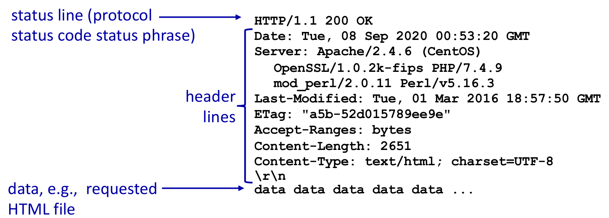
HTTP/1.1 200 OK를 왼쪽 위 화살표가 status line (protocol status code status phrase)(상태 줄: 프로토콜, 상태 코드, 상태 문구)이라고 가리킵니다. 그 아래 Date부터 Content-Type까지 일곱 개의 헤더를 중괄호가 header lines(헤더 줄)로 묶으며, Server 값은 지면 때문에 세 줄로 접혀 OpenSSL · PHP · mod_perl · Perl의 이름과 버전까지 이어집니다. 중괄호 아래 끝의 \r\n이 헤더를 끝내는 빈 줄이고, 그다음 줄 data data data data data ...를 왼쪽 아래 화살표가 data, e.g., requested HTML file(데이터, 예를 들면 요청한 HTML 파일)이라고 가리킵니다. 요청 메시지와 똑같이 “첫 줄 + 헤더 줄 + 빈 줄 + 본문”의 모양이고, 다른 점은 첫 줄이 요청 대신 처리 결과를 알린다는 것입니다.메시지 본체를 옮기면 다음과 같습니다. 슬라이드에서 세 줄로 접힌 Server 값은 한 줄로 이었습니다.
HTTP/1.1 200 OK
Date: Tue, 08 Sep 2020 00:53:20 GMT
Server: Apache/2.4.6 (CentOS) OpenSSL/1.0.2k-fips PHP/7.4.9 mod_perl/2.0.11 Perl/v5.16.3
Last-Modified: Tue, 01 Mar 2016 18:57:50 GMT
ETag: "a5b-52d015789ee9e"
Accept-Ranges: bytes
Content-Length: 2651
Content-Type: text/html; charset=UTF-8
\r\n
data data data data data ...- 상태 줄(status line)은 프로토콜 버전
HTTP/1.1, 상태 코드(status code)200, 상태 문구(status phrase)OK로 이루어집니다. - 이 슬라이드는 빈 줄에만
\r\n을 적었지만, 요청 메시지와 마찬가지로 상태 줄과 각 헤더 줄도 CR LF로 끝납니다.
| 헤더 | 값 | 뜻 |
|---|---|---|
Date |
Tue, 08 Sep 2020 00:53:20 GMT |
응답을 만든 시각 |
Server |
Apache/2.4.6 (CentOS) … |
서버 소프트웨어. CentOS에서 도는 Apache 2.4.6에 OpenSSL, PHP, mod_perl, Perl이 함께 올라가 있습니다 |
Last-Modified |
Tue, 01 Mar 2016 18:57:50 GMT |
객체가 마지막으로 바뀐 시각. 4.4절의 조건부 GET이 이 값을 씁니다 |
ETag |
"a5b-52d015789ee9e" |
객체의 특정 버전을 가리키는 식별자 |
Accept-Ranges |
bytes |
객체의 일부(바이트 범위)만 요청해도 된다는 표시 |
Content-Length |
2651 |
본문의 바이트 수 |
Content-Type |
text/html; charset=UTF-8 |
본문의 형식(HTML)과 문자 인코딩(UTF-8) |
Content-Length가 특히 중요합니다. 2.6절의 지속 연결에서는 응답을 보낸 뒤에도 연결이 열려 있으므로, 클라이언트는 연결이 닫히는 것(EOF)으로 본문의 끝을 알 수 없습니다. 대신 빈 줄 다음부터 2651바이트를 읽으면 본문이 끝났다는 것을 압니다.Server값의mod_perl과PHP는 3.4절에서 볼 mod_XXX, 즉 웹 서버 프로세스 안에 언어 모듈을 올려 동적 콘텐츠를 만드는 방식이 실제로 쓰이는 모습입니다.Date의 2020년 9월은 이 예제를 얻은 시점이고,Last-Modified의 2016년 3월은 그보다 4년 반쯤 전에 이 HTML 파일이 마지막으로 바뀌었다는 뜻입니다.
2.10 HTTP 응답 상태 코드 (HTTP response status codes)
상태 코드는 서버가 클라이언트로 보내는 응답 메시지의 첫 줄에 나타납니다. 슬라이드가 고른 몇 가지 예는 다음과 같습니다.
| 상태 코드 | 뜻 |
|---|---|
| 200 OK | 요청이 성공했고, 요청한 객체가 이 메시지의 뒷부분에 있습니다 |
| 301 Moved Permanently | 요청한 객체가 옮겨졌고, 새 위치는 이 메시지의 뒷부분(Location: 필드)에 있습니다 |
| 400 Bad Request | 서버가 요청 메시지를 이해하지 못했습니다 |
| 404 Not Found | 요청한 문서가 이 서버에 없습니다 |
| 505 HTTP Version Not Supported | 요청 메시지가 쓴 HTTP 버전을 서버가 지원하지 않습니다 |
- 첫 자리 숫자가 응답의 종류를 나타냅니다. 2로 시작하면 성공, 3으로 시작하면 요청을 마무리하기 위해 클라이언트가 더 할 일이 있다는 뜻(새 위치로 다시 요청하기 등), 4로 시작하면 클라이언트 쪽의 잘못, 5로 시작하면 서버 쪽의 문제입니다.
- 4.4절의 조건부 GET에서는 여기에 없는 304 Not Modified가 등장합니다.
2.11 HTTP 직접 시험해 보기 (Trying out HTTP (client side) for yourself)
HTTP 메시지가 ASCII 텍스트이므로, 브라우저 없이도 손으로 요청을 쳐서 보낼 수 있습니다. 슬라이드의 세 단계는 다음과 같습니다.
1. 좋아하는 웹 서버에 netcat으로 접속합니다.
% nc -C -v www.google.com 80www.google.com의 포트 80(HTTP 서버의 기본 포트)으로 TCP 연결을 엽니다.- 이후 입력하는 내용은 모두
www.google.com의 포트 80으로 보내집니다.
2. GET 요청을 입력합니다.
GET / HTTP/1.1
Host: www.google.com
- 이렇게 입력하고 엔터를 두 번 치면, 최소한이지만 완전한(minimal but complete) GET 요청이 HTTP 서버로 보내집니다.
3. HTTP 서버가 보낸 응답 메시지를 살펴봅니다. 캡처한 HTTP 요청과 응답을 Wireshark로 살펴볼 수도 있습니다.
이 짧은 실험에 2.7절의 내용이 모두 들어 있습니다.
- 엔터를 두 번 치는 이유: 두 번째 엔터가 만드는 빈 줄이 헤더의 끝을 알리기 때문입니다. 빈 줄을 보내기 전까지 서버는 헤더가 더 올 것이라고 보고 기다립니다.
Host줄이 있어야 “완전한” 이유: HTTP/1.1 요청에는Host헤더가 반드시 있어야 하기 때문입니다. 요청 줄에는 경로/만 있으므로, 서버는 이 헤더로 어느 사이트를 원하는지 압니다.-C옵션: 엔터를 칠 때 줄 끝을\n하나가 아니라 HTTP가 요구하는\r\n(CR LF)으로 보내게 합니다.-v는 연결 과정을 자세히 출력하게 합니다.- 17강에서 echo 서버를
telnet으로 시험했던 것과 같은 방법입니다. ASCII로 주고받는 프로토콜은 이렇게 손으로 시험할 수 있다는 것이 큰 장점입니다.
슬라이드의 -C는 리눅스에서 흔히 쓰는 OpenBSD판 netcat의 옵션입니다. macOS에 기본으로 들어 있는 nc에서는 CR LF를 보내는 옵션이 소문자 -c이고, 대문자 -C는 셀룰러 데이터를 쓰지 말라는 전혀 다른 옵션입니다(man nc). macOS에서 따라 할 때 -C를 쓰면 줄 끝이 \n만 나가므로, nc -c -v www.google.com 80으로 바꾸어야 합니다.
3. Tiny 웹 서버 (Tiny Web Server)
2장이 클라이언트 쪽에서 본 HTTP였다면, 이 장은 서버 쪽입니다. HTTP 서버는 실제로 어떻게 생겼을까요?
3.1 Tiny 웹 서버 (Tiny Web Server)
- 교재(11.6절)에 실린 Tiny 웹 서버를 살펴봅니다.
- Tiny는 순차(sequential) 웹 서버입니다.
- 진짜 브라우저에 정적 콘텐츠와 동적 콘텐츠를 모두 제공합니다. 텍스트 파일, HTML 파일, GIF와 JPEG 이미지를 다룹니다.
- 주석을 포함해 226줄의 C 코드입니다.
- 실제 웹 서버만큼 완전하거나 견고하지는 않습니다.
- 교재의 RIO 라이브러리를 씁니다.
순차 서버라는 말은 연결을 한 번에 하나씩 처리한다는 뜻입니다. accept로 연결 하나를 받아 요청을 처리하고 연결을 닫은 뒤에야 다음 연결을 받으므로, 한 클라이언트를 처리하는 동안 다른 클라이언트는 기다려야 합니다. 17강 끝에서 echo 서버의 문제로 꼽은 “여러 연결을 동시에 받지 못한다”는 한계를 Tiny도 그대로 가지고 있습니다.
RIO(Robust I/O)는 교재 10장의 입출력 패키지로, 앞으로 볼 코드의 Rio_writen이 이 패키지의 함수입니다. 소켓에 대한 write는 커널 버퍼 사정에 따라 요청한 것보다 적은 바이트만 쓰고 돌아올 수 있는데(4강 1.11절의 짧은 카운트, short count), Rio_writen은 요청한 바이트를 모두 쓸 때까지 write를 되풀이해 이 문제를 감춥니다. 4강에서 정리했듯 표준 I/O는 소켓 입출력에 맞지 않으므로, 교재는 그 자리를 RIO로 채웁니다. 또 코드의 Open · Mmap · Close · Munmap처럼 첫 글자가 대문자인 함수는 같은 이름의 소문자 함수(Open이라면 시스템 호출 open, Rio_writen이라면 RIO 함수 rio_writen)를 부르고 실패하면 오류 메시지를 출력한 뒤 종료하는, 교재의 오류 처리 래퍼(wrapper)입니다.
3.2 Tiny의 동작 (Tiny Operation)
Tiny가 요청 하나를 처리하는 흐름은 다음과 같습니다.
- 클라이언트에서 요청을 읽습니다.
- 요청 줄을 method / uri / version으로 나눕니다. 2.7.1절의 형식대로 공백을 기준으로 자릅니다.
- GET이 아니면 오류를 돌려줍니다.
- URI에 “cgi-bin”이 들어 있으면 동적 콘텐츠를 제공합니다.
- (파일 이름이 “abcgi-bingo.html”이라면 잘못 처리할 것입니다.)
- 프로세스를 fork해 프로그램을 실행합니다.
- 그렇지 않으면 정적 콘텐츠를 제공합니다.
- 파일을 출력으로 복사합니다.
| 조건 | 처리 | 다루는 절 |
|---|---|---|
| 메서드가 GET이 아님 | 오류 응답 | — |
URI에 cgi-bin이 들어 있음 |
동적 콘텐츠: fork한 자식에서 프로그램 실행 | 3.4절 |
| 그 밖의 경우 | 정적 콘텐츠: 파일을 그대로 복사 | 3.3절 |
Tiny는 URI 안 어디에든 문자열 cgi-bin이 들어 있는지만 봅니다. 그런데 abcgi-bingo.html은 ab + cgi-bin + go.html로 나누어 보면 cgi-bin을 품고 있으므로, 평범한 HTML 파일인데도 실행할 프로그램으로 취급됩니다. 26번 슬라이드처럼 “cgi-bin”을 찾는 대신 3.4절의 28번 슬라이드처럼 앞에 /를 붙인 “/cgi-bin”을 찾으면 이 예는 정적 파일로 바르게 처리되지만, /docs/cgi-bingo.html처럼 경로 중간에 /cgi-bin이 나타나는 이름은 여전히 잘못 처리됩니다. 경로가 /cgi-bin/으로 시작하는지를 확인해야 이런 오판을 확실히 피할 수 있습니다.
3.3 정적 콘텐츠 제공 (Tiny Serving Static Content)
슬라이드는 tiny.c의 serve_static 함수에서 정적 콘텐츠를 보내는 부분을 가져와 보여 줍니다. fd는 accept로 얻은 연결 소켓의 디스크립터이고, filename과 filesize는 요청된 파일의 이름과 크기입니다. 오른쪽 주석은 이 글에서 덧붙인 것입니다.
// Send response headers to client
get_filetype(filename, filetype); // 파일 이름으로 Content-type을 정한다
sprintf(buf, "HTTP/1.0 200 OK\r\n"); // 상태 줄
sprintf(buf, "%sServer: Tiny Web Server\r\n", buf);
sprintf(buf, "%sContent-length: %d\r\n", buf, filesize); // 본문 바이트 수
sprintf(buf, "%sContent-type: %s\r\n\r\n", // 끝의 \r\n이 헤더를 끝내는 빈 줄
buf, filetype);
Rio_writen(fd, buf, strlen(buf)); // 헤더 전체를 소켓에 쓴다
// Send response body to client
srcfd = Open(filename, O_RDONLY, 0);
srcp = Mmap(0, filesize, PROT_READ, MAP_PRIVATE, srcfd, 0); // 파일을 주소 공간에 매핑
Close(srcfd); // 매핑은 fd를 닫아도 유지된다
Rio_writen(fd, srcp, filesize); // 매핑된 바이트를 그대로 소켓에 쓴다
Munmap(srcp, filesize); // 매핑을 해제한다슬라이드가 코드 아래에 정리한 네 줄은 다음과 같습니다.
filename이 지정한 파일을 제공합니다.- 파일의 메타데이터로 헤더를 구성합니다.
- 파일을 mmap으로 “읽습니다”.
- 출력으로 씁니다.
| 단계 | 코드 | 설명 |
|---|---|---|
| ① 헤더 만들기 | get_filetype, sprintf ×4 |
상태 줄 HTTP/1.0 200 OK, Server, Content-length, Content-type을 buf에 이어 붙입니다. 길이는 파일의 메타데이터(5강의 struct stat이 주는 파일 크기)에서, 형식은 파일 이름의 확장자에서 얻습니다 |
| ② 헤더 보내기 | Rio_writen(fd, buf, …) |
마지막 \r\n\r\n 가운데 뒤쪽 \r\n이 헤더를 끝내는 빈 줄이므로, 이 한 번의 쓰기로 2.9절 형식의 앞부분이 완성됩니다 |
| ③ 파일 매핑 | Open, Mmap, Close |
파일을 읽기 전용, 사적(private) 매핑으로 주소 공간에 붙인 뒤 디스크립터는 바로 닫습니다 |
| ④ 본문 보내기 | Rio_writen(fd, srcp, …) |
매핑된 영역을 그대로 소켓에 써서 파일 내용을 본문으로 보냅니다 |
| ⑤ 정리 | Munmap |
매핑을 해제합니다 |
- mmap으로 “읽는다”에 따옴표가 붙은 이유:
read를 한 번도 부르지 않기 때문입니다. 7강에서 익명 공유 영역을 만들 때 썼던mmap을 여기서는 파일을 매핑하는 데 씁니다. 파일이 주소 공간에 매핑되면srcp부터filesize바이트가 곧 파일 내용이고, 그 페이지들을 실제로 메모리에 채우는 일은Rio_writen(정확히는 그 안의write)이 페이지를 처음 건드릴 때 페이지 폴트를 통해 일어납니다. 파일을read로 사용자 버퍼에 한 번 더 복사해 둘 필요가 없습니다. Close(srcfd)를 바로 해도 되는 이유: 매핑은 디스크립터와 별개로 파일을 참조하므로, 디스크립터를 닫아도 매핑은Munmap할 때까지 유효합니다.- 상태 줄이
HTTP/1.0인 이유: Tiny는 요청 하나를 처리하면 연결을 닫는 비지속 방식(2.3절)으로 동작하며, 응답의 버전도 HTTP/1.0으로 밝힙니다.
sprintf(buf, "%s…", buf)는 C 표준상 정의되지 않은 동작입니다
슬라이드의 코드는 buf의 내용을 %s로 읽어 다시 buf에 쓰는 식으로 헤더를 이어 붙입니다. C 표준은 sprintf가 서로 겹치는 객체 사이에서 복사를 하게 되면 그 동작이 정의되지 않는다(undefined behavior)고 정하므로, 이 방식은 표준이 보장하는 코드가 아닙니다. 실제로 문제가 되는 환경도 있습니다. _FORTIFY_SOURCE를 켜고 최적화해 컴파일하면(우분투의 gcc는 최적화 옵션을 주면 이를 기본으로 켭니다) glibc는 검사 기능이 붙은 sprintf를 쓰는데, 이 판은 서식을 채우기 전에 buf를 먼저 비웁니다. 그러면 앞서 이어 붙인 줄이 모두 사라져, 상태 줄 없이 마지막 Content-type 줄만 남습니다. 교재의 공개 코드 tiny.c도 2019년 11월에 이 문제를 고쳐, 지금은 헤더를 한 줄씩 sprintf로 만들어 곧바로 Rio_writen으로 보냅니다. 직접 짤 때는 그렇게 하거나, 지금까지 쓴 길이만큼 뒤에 이어 쓰는 방식(예: buf + strlen(buf)에 쓰기)을 쓰는 편이 안전합니다.
3.4 동적 콘텐츠 제공 (Serving Dynamic Content)
정적 콘텐츠는 이미 있는 파일을 보내는 것이었습니다. 그렇다면 요청할 때마다 내용이 달라지는 페이지는 어떻게 만들까요? 슬라이드는 이를 CGI(Common Gateway Interface), 즉 웹 서버가 외부 프로그램을 실행해 그 출력을 응답으로 돌려주는 방식으로 설명합니다. 세 장의 슬라이드가 한 단계씩 진행됩니다.
① 요청 (28번 슬라이드)
- 클라이언트가 서버에 요청을 보냅니다. 예:
GET /cgi-bin/env.pl HTTP/1.1 - 요청 URI에 문자열 “/cgi-bin”이 들어 있으면, 서버는 그 요청이 동적 콘텐츠를 원한다고 간주합니다.
- 주의: CGI는 여전히 쓰이지만 점점 덜 쓰이는 추세입니다. 요즘 웹 페이지는 JavaScript, PHP 등으로 동적 콘텐츠를 만듭니다.
- 여기서는 동적 콘텐츠가 어떻게 만들어지는지 이해하기 위해서만 다룹니다.
② 실행 (29번 슬라이드)
- 서버는 자식 프로세스를 만들고, URI가 가리키는 프로그램을 그 프로세스에서 실행합니다. 13강의
fork와exec입니다.
③ 전달 (30번 슬라이드)
- 자식이 실행되며 동적 콘텐츠를 만듭니다.
- 서버는 자식이 만든 내용을 받아서 아무것도 고치지 않고 클라이언트에 전달합니다.
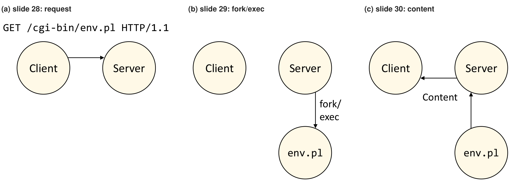
GET /cgi-bin/env.pl HTTP/1.1 요청을 Server에 보냅니다. (b)에서는 서버에서 아래로 뻗은 화살표 fork/exec이 새 프로세스 env.pl을 만들어, 요청된 프로그램을 그 프로세스에서 실행합니다. (c)에서는 env.pl에서 서버로 올라가는 화살표와 서버에서 클라이언트로 가는 화살표 Content가, 자식이 만든 내용이 서버를 거쳐 그대로 클라이언트에 전달된다는 것을 나타냅니다. URI의 /cgi-bin/이 동적 콘텐츠라는 표시이고 그 뒤의 env.pl이 실행할 프로그램의 이름이라는 것, 그리고 요청마다 새 프로세스가 생긴다는 것이 이 그림의 요점입니다.슬라이드는 서버가 자식의 출력을 받아 전달한다고 표현하지만, 교재의 Tiny는 자식이 출력을 아예 소켓에 직접 쓰게 만듭니다. 자식은 exec 직전에 URI의 ? 뒤 부분(2.8절의 GET 데이터)을 환경 변수 QUERY_STRING에 넣고, 5강의 dup2로 표준 출력을 연결 소켓에 바꿔 끼웁니다. 그러면 실행된 프로그램이 평범하게 표준 출력에 쓴 내용이 곧바로 클라이언트에게 갑니다. 상태 줄 HTTP/1.0 200 OK와 Server 헤더는 부모가 fork하기 전에 먼저 소켓에 써 두므로, CGI 프로그램은 나머지 헤더(Content-length · Content-type 등)와 빈 줄, 본문을 출력하고, 부모는 13강에서 본 대로 끝난 자식을 수확(reaping)하기만 하면 됩니다. 결과만 보면 서버가 자식의 출력을 고치지 않고 그대로 넘긴 것과 같습니다.
fork()/exec()을 요청마다 하는 것은 너무 비싸지 않을까요? 슬라이드도 이 질문을 던집니다. 요청 하나마다 프로세스를 새로 만들고 프로그램을 처음부터 적재하는 것은 2.6절에서 본 “연결마다 드는 부담”과 비슷한 고정 비용입니다. 그래서 오늘날에는 FastCGI와 mod_XXX가 동적 웹 콘텐츠를 만드는 더 흔한 방법입니다.
| 방식 | 프로그램이 도는 곳 | 장점 | 단점 |
|---|---|---|---|
| CGI | 요청마다 fork/exec한 새 프로세스 | 단순하고, 서버와 프로그램이 분리됩니다 | 요청마다 프로세스 생성 비용이 듭니다 |
| FastCGI | 미리 fork해 둔 작업자 프로세스(pre-forked worker processes) | 프로세스를 재사용하며, 서버와는 프로세스 간 통신(IPC)으로 주고받습니다 | 서버와 작업자 사이의 통신 비용은 남습니다 |
| mod_XXX | 웹 서버 프로세스 안에 적재된 언어 모듈 | 문맥 교환이 필요 없어 더 빠릅니다 | 모듈이 죽으면 서버 전체가 죽습니다 |
- 슬라이드는 mod_XXX를 “language models are loaded into the web server process”라고 적었는데, 문맥상 언어 처리 모듈, 즉 Perl이나 PHP 같은 언어의 인터프리터를 서버 프로세스 안에 올린다는 뜻입니다. 2.9절 응답의
Server헤더에 보이던mod_perl과PHP가 그 예입니다. - 세 방식은 결국 격리와 속도의 맞교환입니다. 프로세스를 따로 둘수록 하나가 죽어도 다른 것이 살아남지만, 프로세스 사이를 오가는 비용(13강의 문맥 교환)이 듭니다.
4. 프록시 (Proxies)
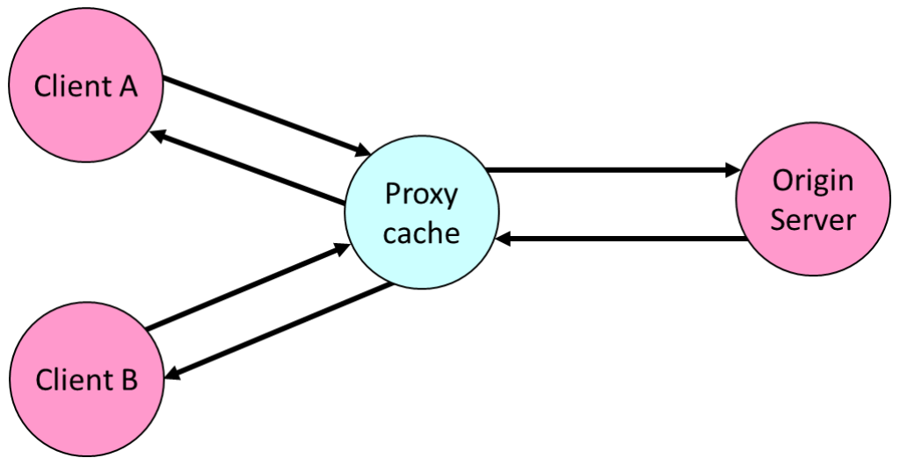
클라이언트와 원 서버 사이에 끼어 요청과 응답을 중계하는 프로그램을 프록시(proxy)라고 합니다. 이 장의 프록시는 그중에서도 받은 객체를 저장해 두었다가 다시 쓰는 웹 캐시입니다. 슬라이드는 이 단원에서 조건부 GET에 이어, 캐시와 같은 목표, 즉 응답 지연을 줄인다는 목표를 프로토콜 쪽에서 추구한 HTTP/2와 HTTP/3까지 다룹니다.
4.1 웹 캐시 (Web caches)
목표: 원 서버를 거치지 않고 클라이언트의 요청을 충족시키는 것
- 사용자는 브라우저가 (가까운) 웹 캐시(Web cache)를 가리키도록 설정합니다.
- 브라우저는 모든 HTTP 요청을 캐시로 보냅니다.
- 객체가 캐시에 있으면: 캐시가 객체를 클라이언트에 돌려줍니다.
- 그렇지 않으면: 캐시가 원 서버에 객체를 요청하고, 받은 객체를 저장(캐싱)한 뒤 클라이언트에 돌려줍니다.
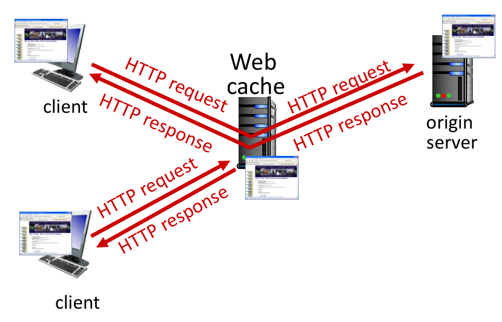
4.2 웹 캐시, 곧 프록시 서버 (Web caches (aka proxy servers))
- 웹 캐시는 클라이언트이자 서버로 동작합니다.
- 요청을 처음 보낸 클라이언트에게는 서버입니다.
- 원 서버에게는 클라이언트입니다.
- 서버는 응답 헤더로 그 객체를 어떻게 캐싱해도 되는지 캐시에 알려 줍니다.
Cache-Control: max-age=<seconds>
Cache-Control: no-cachemax-age=<seconds>는 그 객체를 주어진 초 동안은 원 서버에 묻지 않고 다시 써도 된다는 뜻입니다.- 소켓의 말로 하면, 웹 캐시는 클라이언트 쪽에서 오는 연결을
accept하는 서버이면서, 캐시에 없는 객체를 가져오려고 원 서버에connect하는 클라이언트입니다. 3장의 서버 코드와 17강의 클라이언트 코드를 한 프로그램에 합친 셈입니다.
이름과 달리 Cache-Control: no-cache는 캐시가 객체를 저장하는 것을 막지 않습니다. 저장해 두되, 다시 쓰기 전에 원 서버에 최신인지 확인을 받으라는 뜻이며, 그 확인에 쓰는 것이 4.4절의 조건부 GET입니다. 아예 저장하지 말라는 지시는 따로 no-store가 맡습니다.
왜 웹 캐싱을 할까요? (Why Web caching?)
| 이유 | 설명 |
|---|---|
| 클라이언트 요청의 응답 시간 단축 | 캐시가 클라이언트에 더 가깝습니다 |
| 기관 접속 회선의 트래픽 감소 | 캐시에서 처리된 요청은 기관 밖으로 나가지 않습니다. 4.3절의 예제가 이 효과를 계산합니다 |
| 인터넷에는 캐시가 빽빽하다 | “가난한(poor)” 콘텐츠 제공자도 콘텐츠를 더 효과적으로 전달할 수 있습니다 |
- 마지막 항목에 대해 발표자 노트는 “부동산처럼 위치가 전부다. 서버는 클라이언트 가까이 있고 싶어 한다”고 덧붙입니다. 자기 서버를 전 세계 곳곳에 둘 여력이 없는 제공자도, 이미 사용자 가까이에 깔려 있는 캐시들이 사본을 들고 있어 주면 먼 곳의 사용자에게 빠르게 콘텐츠를 전할 수 있다는 뜻입니다.
4.3 캐싱 예제 (Caching example)
캐시가 얼마나 효과가 있는지 숫자로 따져 봅니다.
시나리오 (Scenario)
- 접속 회선(access link) 속도: 1.54 Mbps
- 기관 라우터에서 서버까지의 RTT: 2초
- 웹 객체 크기: 100K 비트
- 브라우저가 원 서버로 보내는 평균 요청률: 초당 15개
- 그에 따른 브라우저로의 평균 데이터 전송률: 1.50 Mbps
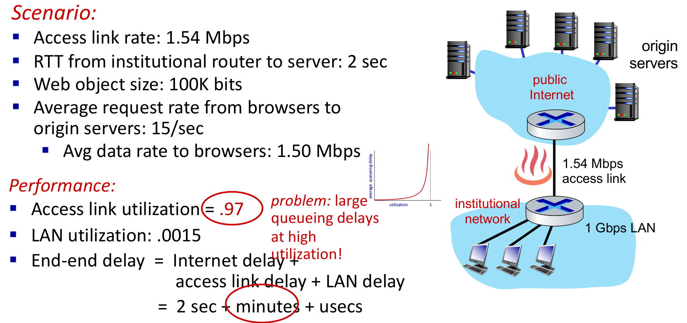
먼저 평균 데이터 전송률은 요청률과 객체 크기의 곱입니다.
\[ 15\ \tfrac{\text{요청}}{\text{초}} \times 100\ \tfrac{\text{Kbit}}{\text{요청}} = 1{,}500\ \text{Kbps} = 1.50\ \text{Mbps} \]
이용률(utilization)은 회선이 실어 나르는 데이터 전송률을 회선 속도로 나눈 값, 즉 회선이 바쁜 시간의 비율입니다. 이 트래픽은 모두 접속 회선과 LAN을 지나므로 두 이용률은 다음과 같습니다.
\[ \begin{aligned} \text{접속 회선 이용률} &= \frac{1.50\ \text{Mbps}}{1.54\ \text{Mbps}} \approx 0.974 \approx 0.97 \\ \text{LAN 이용률} &= \frac{1.50\ \text{Mbps}}{1\ \text{Gbps}} = \frac{1.50}{1000} = 0.0015 \end{aligned} \]
성능 (Performance)
- 접속 회선 이용률 = .97
- LAN 이용률 = .0015
- 종단 간 지연(end-end delay) = 인터넷 지연 + 접속 회선 지연 + LAN 지연 = 2초 + 수 분(minutes) + 수 마이크로초(usecs)
문제: 이용률이 높으면 큐잉 지연이 커집니다(large queueing delays at high utilization)! 가운데의 작은 그래프가 그 이유를 보여 줍니다. 발표자 노트는 여기서 왜 “수 분”인지를 설명하라며, Kurose & Ross 교재 1장의 지연–도착률 곡선을 떠올리라고 적고 있습니다.
- 회선에 도착하는 데이터가 회선이 내보낼 수 있는 속도에 가까워지면, 데이터가 조금만 몰려도 내보내지 못한 분량이 대기열(큐)에 쌓이고, 쌓인 것을 비울 여유가 거의 없으므로 대기열이 좀처럼 줄지 않습니다.
- 그래서 평균 큐잉 지연은 이용률이 낮을 때는 거의 0이다가 1에 가까워질수록 급격히 커지고, 1에 이르면 한없이 커집니다. 이용률 0.97은 곡선이 수직에 가깝게 치솟는 구간이므로, 슬라이드는 이 회선의 지연을 “수 분”이라고 적었습니다.
- 반면 LAN 이용률 0.0015는 곡선의 바닥이므로 LAN 지연은 수 마이크로초로 무시할 만합니다. 병목은 LAN이 아니라 접속 회선입니다.
4.3.1 방안 1: 더 빠른 접속 회선 사기 (Option 1: buy a faster access link)
- 접속 회선을 1.54 Mbps에서 154 Mbps로, 즉 100배 빠른 것으로 바꿉니다.
\[ \text{접속 회선 이용률} = \frac{1.50\ \text{Mbps}}{154\ \text{Mbps}} \approx 0.00974 \approx 0.0097 \]
- 이용률이 .97에서 .0097로 떨어지므로 접속 회선 지연이 수 분에서 수 밀리초(msecs)로 줄어듭니다.
- 종단 간 지연 = 2초 + 수 밀리초 + 수 마이크로초, 즉 약 2초입니다.
- 비용: 더 빠른 접속 회선은 비쌉니다!
- 회선을 아무리 키워도 기관 라우터에서 서버까지의 RTT 2초는 그대로 남는다는 점에 주의합니다.
4.3.2 방안 2: 웹 캐시 설치 (Option 2: install a web cache)
- 접속 회선은 1.54 Mbps 그대로 두고, 기관 네트워크 안에 로컬 웹 캐시(local web cache)를 설치합니다.
- 비용: 웹 캐시는 쌉니다!
- 성능: LAN 이용률, 접속 회선 이용률, 평균 종단 간 지연은 각각 얼마일까요? 슬라이드는 “회선 이용률과 지연을 어떻게 계산할까?”라는 질문으로 다음 슬라이드로 넘어갑니다.
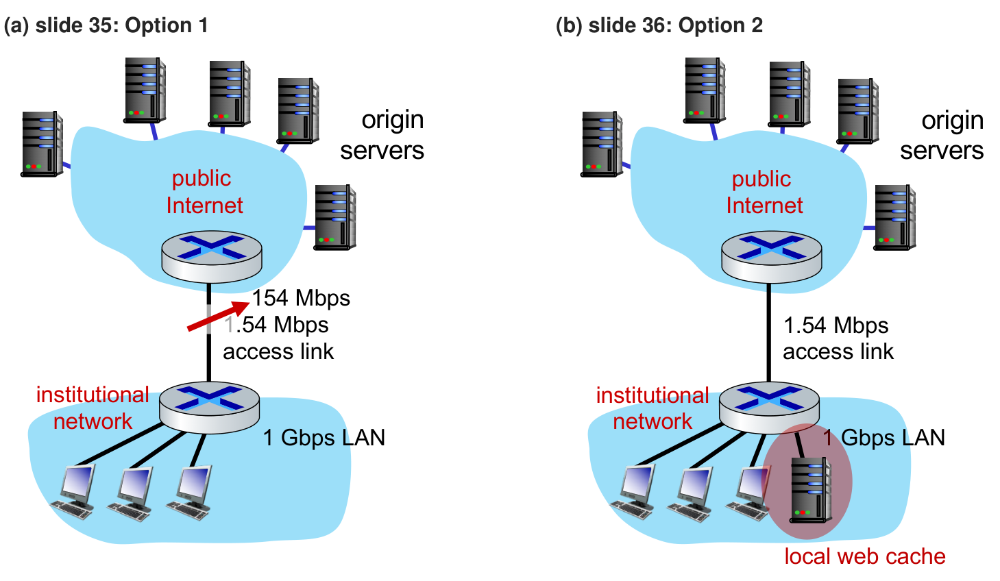
4.3.3 캐시가 있을 때의 이용률과 지연 (Access link utilization, end-end delay with cache)
캐시 적중률(cache hit rate)이 0.4라고 가정합시다.
- 요청의 40%는 캐시에서 낮은(밀리초 수준의) 지연으로 처리됩니다.
- 요청의 60%는 원 서버에서 충족됩니다. 접속 회선을 지나는 것은 이 60%뿐입니다.
\[ \begin{aligned} \text{접속 회선을 지나는 전송률} &= 0.6 \times 1.50\ \text{Mbps} = 0.9\ \text{Mbps} \\ \text{접속 회선 이용률} &= \frac{0.9\ \text{Mbps}}{1.54\ \text{Mbps}} \approx 0.584 \approx 0.58 \end{aligned} \]
- 이용률 0.58은 큐잉 지연 곡선의 완만한 구간이므로, 접속 회선의 큐잉 지연이 낮은(밀리초 수준) 값이 됩니다.
평균 종단 간 지연은 두 경우의 지연을 각 경우의 비율로 가중 평균한 값입니다. 확률로 말하면 요청 하나의 지연 \(D\)를 적중 여부로 나누어 기댓값을 구하는 것입니다.
\[ \begin{aligned} \mathbb{E}[D] &= 0.6 \times (\text{원 서버에서의 지연}) + 0.4 \times (\text{캐시에서의 지연}) \\ &= 0.6 \times 2.01\ \text{s} + 0.4 \times (\text{수 ms}) \\ &\approx 1.206\ \text{s} + (\text{수 ms}) \approx 1.2\ \text{s} \end{aligned} \]
- 원 서버에서 받을 때의 지연 2.01초는 인터넷 지연 2초에, 이제 혼잡하지 않은 접속 회선과 LAN에서의 지연(약 0.01초)을 더한 값으로 읽힙니다.
- 캐시에서 받을 때의 지연은 밀리초 수준이므로, 0.4를 곱해도 평균에 거의 보태지 않습니다.
- LAN 이용률은 슬라이드가 따로 답하지 않았는데, 캐시에서 오든 원 서버에서 오든 결국 모든 객체가 LAN을 거쳐 브라우저에 닿으므로 1 Gbps에 비하면 여전히 무시할 만한 수준에 머뭅니다.
| 접속 회선 | 접속 회선 이용률 | 평균 종단 간 지연 | 비용 | |
|---|---|---|---|---|
| 현재 | 1.54 Mbps | .97 | 2초 + 수 분 + 수 마이크로초 | — |
| 방안 1: 더 빠른 회선 | 154 Mbps | .0097 | 약 2초 (2초 + 수 밀리초 + 수 마이크로초) | 비쌈 |
| 방안 2: 웹 캐시 | 1.54 Mbps | .58 | 약 1.2초 | 쌈 |
적중률 0.4의 웹 캐시는 154 Mbps 회선보다 평균 종단 간 지연이 짧고, 게다가 더 쌉니다(Lower average end-end delay than with 154 Mbps link (and cheaper too!)). 회선을 키우면 큐잉 지연은 사라지지만 모든 요청이 여전히 인터넷 지연 2초를 치러야 합니다. 캐시는 큐잉 지연을 줄이는 동시에, 요청의 40%에서는 그 2초마저 없애기 때문입니다.
4.4 브라우저 캐싱: 조건부 GET (Browser caching: Conditional GET)
캐시에 사본이 있어도 그 사본이 여전히 최신인지는 알 수 없습니다. 조건부 GET은 이 확인을 객체 전송 없이 해치우는 방법입니다.
- 목표: 브라우저가 최신 캐시 사본을 갖고 있으면 객체를 보내지 않는 것입니다.
- 객체 전송 지연도, 네트워크 자원 사용도 없습니다.
- 클라이언트: HTTP 요청에 브라우저가 캐싱한 사본의 날짜를 적습니다.
If-modified-since: <date>
- 서버: 브라우저의 캐시 사본이 최신이면 객체를 담지 않은 응답을 보냅니다.
HTTP/1.0 304 Not Modified
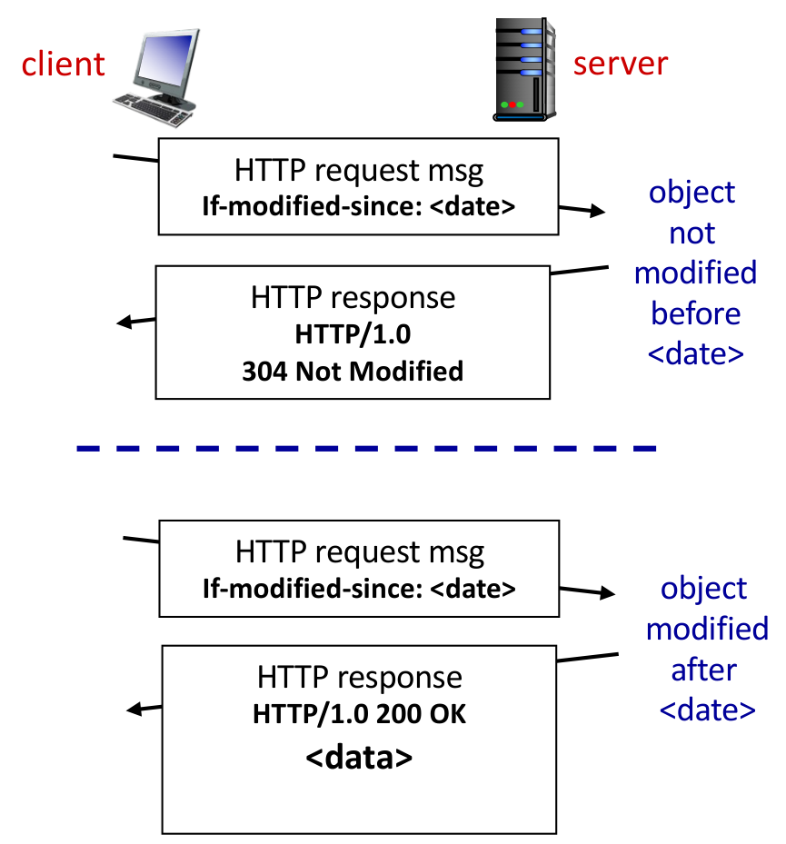
If-modified-since: <date> 헤더를 담은 HTTP request msg(HTTP 요청 메시지)를 보내고, 객체가 그 날짜 이후로 바뀌지 않았으므로(그림의 표기는 object not modified before <date>이지만, 뜻은 <date> 이후로 바뀌지 않았다는 것입니다) 서버는 HTTP/1.0 304 Not Modified 응답만 돌려보냅니다. 파란 점선 아래의 경우에는 같은 요청에 대해 객체가 그 날짜 이후에 바뀌었으므로(object modified after <date>) 서버가 HTTP/1.0 200 OK 응답과 함께 <data>, 곧 객체를 보냅니다. 아래쪽 응답 상자가 더 큰 것은 200 응답에만 객체가 실린다는 것을 나타내며, 사본이 최신일 때는 짧은 304 응답 하나로 확인이 끝난다는 것이 이 그림의 요점입니다.| 객체의 상태 | 서버의 응답 | 실리는 것 |
|---|---|---|
<date> 이후로 바뀌지 않음 |
HTTP/1.0 304 Not Modified |
객체 없음. 브라우저는 캐시 사본을 그대로 씁니다 |
<date> 이후에 바뀜 |
HTTP/1.0 200 OK |
새 객체 <data> |
<date>에는 보통 그 사본을 받을 때 응답에 실려 있던Last-Modified값(2.9절)을 그대로 씁니다. 그래서 서버는 자기가 알려 준 날짜와 현재의 수정 시각을 비교하기만 하면 됩니다.- 304 응답에도 RTT 하나는 들지만, 객체 전송 시간과 그만큼의 대역폭을 아낍니다. 4.2절의
no-cache가 요구하는 “다시 쓰기 전의 확인”이 바로 이 왕복입니다.
4.5 HTTP/2
지금까지 본 캐시는 같은 객체를 다시 받아 오는 일을 줄였습니다. 슬라이드는 이어서 프로토콜 자체를 고쳐 지연을 줄이는 HTTP/2와 HTTP/3을 다룹니다. HTTP/2의 핵심 목표는 여러 객체를 요청할 때의 지연을 줄이는 것입니다.
HTTP/1.1은 TCP 연결 하나로 여러 개의 GET을 파이프라인(pipelined)으로, 즉 응답을 기다리지 않고 연달아 보낼 수 있게 했습니다. 슬라이드는 출처를 [RFC 2016, 1999]로 적었지만, RFC 2016은 Uniform Resource Agents에 관한 1996년 문서이고 1999년의 HTTP/1.1 명세는 RFC 2616입니다.
- 서버는 GET 요청에 도착 순서대로(in-order), 즉 선착순(FCFS, first-come-first-served) 스케줄링으로 응답합니다.
- 선착순이므로 작은 객체가 큰 객체 뒤에서 전송을 기다려야 할 수 있습니다. 이것을 HOL 블로킹(head-of-line blocking)이라고 합니다.
- 손실 복구(잃어버린 TCP 세그먼트의 재전송)가 객체 전송을 멈춰 세웁니다.
HTTP/2(RFC 9113, 2022)는 서버가 클라이언트에 객체를 보내는 방식의 유연성을 높였습니다.
- 메서드, 상태 코드, 대부분의 헤더 필드는 HTTP 1.1과 같습니다. 2.8절의 메서드와 2.10절의 상태 코드, 2.7 · 2.9절 표의 헤더 대부분이 그대로 쓰인다는 뜻입니다. 다만 2.7 · 2.9절에서 본 ASCII 줄 형식(요청 줄 · 상태 줄 · CR LF로 끝나는 헤더 줄 · 빈 줄)은 바이너리 프레임으로 바뀌고,
Connection같은 연결 관리용 헤더는 쓰지 않습니다. 5.1절 요약의 “현재 버전들은 바이너리”가 이것입니다. - 요청된 객체의 전송 순서를 클라이언트가 지정한 객체 우선순위에 따라 정합니다(꼭 선착순이 아님).
- 요청하지 않은 객체를 클라이언트에 밀어 넣을(push) 수 있습니다.
- 객체를 프레임(frame)으로 나누고, 프레임 전송을 스케줄링해 HOL 블로킹을 완화합니다.
슬라이드가 인용한 RFC 9113(2022)은 5.2절의 표에 실린 HTTP/2의 첫 명세 RFC 7540(2015)을 대체한 개정판입니다.
4.6 HTTP/2의 HOL 블로킹 완화 (HTTP/2: mitigating HOL blocking)
같은 상황을 두 버전으로 비교합니다. 클라이언트가 큰 객체 1개(예: 동영상 파일)와 작은 객체 3개를 요청합니다.
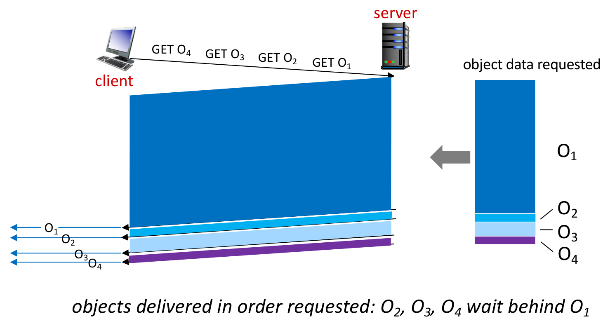
- HTTP 1.1: 객체들이 요청한 순서대로 전달됩니다. \(O_2\), \(O_3\), \(O_4\)는 작은데도 \(O_1\) 뒤에서 기다립니다.
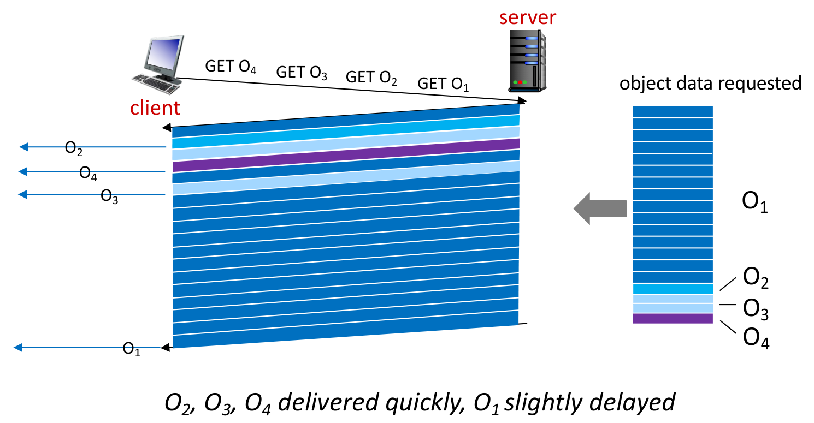
- HTTP/2: 객체를 프레임으로 나누고, 프레임 전송을 끼워 넣습니다(interleaved). \(O_2\), \(O_3\), \(O_4\)는 빨리 전달되고, \(O_1\)은 조금 늦어집니다.
발표자 노트는 이 그림에 “최단 작업 우선(shortest job first): 평균 지연이 줄었다!”라고 적었습니다. 그 뜻을 간단한 계산으로 확인해 보겠습니다.
\(O_1\)을 다 보내는 데 시간 \(T\)가, 작은 객체 하나를 보내는 데 시간 \(t\)가 걸린다고 단순화합시다(\(t \ll T\)). 네 객체가 각각 완성되는 시각의 평균을, 요청 순서 그대로인 선착순(\(O_1 \to O_2 \to O_3 \to O_4\))과 작은 것을 먼저 보내는 순서(\(O_2 \to O_3 \to O_4 \to O_1\))로 비교하면 다음과 같습니다.
\[ \begin{aligned} \text{선착순}: \quad & \tfrac{1}{4}\big[T + (T+t) + (T+2t) + (T+3t)\big] = T + 1.5t \\ \text{작은 것 먼저}: \quad & \tfrac{1}{4}\big[t + 2t + 3t + (T+3t)\big] = \tfrac{T}{4} + 2.25t \end{aligned} \]
\(t \ll T\)이면 평균 완성 시각이 약 \(T\)에서 약 \(T/4\)로 줄어듭니다. 그 대가로 \(O_1\)의 완성은 \(T\)에서 \(T + 3t\)로 겨우 \(3t\)만 늦어지므로, 그림의 “\(O_1\) slightly delayed”와 맞아떨어집니다. HTTP/2는 작은 객체를 엄격하게 먼저 보내는 대신 프레임을 섞어 보내지만, 한두 프레임짜리 작은 객체는 섞는 과정에서 일찍 끝나므로 효과가 같은 방향으로 나타납니다.
4.7 HTTP/2에서 HTTP/3으로 (HTTP/2 to HTTP/3)
HTTP/2도 여전히 TCP 연결 하나 위에서 동작한다는 데서 남은 문제들이 생깁니다.
- 패킷 손실에서 복구하는 동안 여전히 모든 객체의 전송이 멈춥니다.
- 그래서 HTTP 1.1 때처럼 브라우저는 멈춤을 줄이고 전체 처리량을 높이려고 TCP 연결을 여러 개 병렬로 열고 싶어집니다.
- 평범한(vanilla) TCP 연결에는 보안이 없습니다.
- 다만 실제로 HTTP/2는 대개 암호화(https) 위에서 쓰입니다.
- HTTP/3: UDP 위에서 보안과 객체별 오류 제어 · 혼잡 제어(더 많은 파이프라이닝)를 더합니다.
- 슬라이드의 “More on HTTP/3 in transport layer”는 HTTP/3의 자세한 내용을 Kurose & Ross 교재의 전송 계층 장으로 미루는 문구로, 이 강의에서는 더 다루지 않습니다.
첫 번째 문제의 이유는 16강 2.7절의 TCP 연결의 성질에 있습니다. TCP는 바이트 스트림을 보낸 순서 그대로 전달하므로, 세그먼트 하나를 잃으면 그 뒤에 도착한 바이트들은 다른 객체의 프레임이라도 재전송이 도착할 때까지 응용 프로그램에 넘겨지지 못합니다. HTTP/2가 응용 계층에서 완화한 HOL 블로킹이 전송 계층에서 다시 생기는 셈입니다. HTTP/3은 순서를 강제하는 TCP 대신 UDP 위에서 객체마다 따로 오류를 복구하므로, 한 객체의 손실이 다른 객체를 멈춰 세우지 않습니다. 실제로 HTTP/3은 UDP 위에 QUIC이라는 전송 프로토콜을 올리고, 그 위에서 동작합니다. 다만 QUIC에서 객체(스트림)마다 따로 이루어지는 것은 손실의 영향(잃어버린 데이터가 그 스트림만 멈춰 세우는 것)과 흐름 제어이고, 혼잡 제어는 연결 하나에 하나만 있어 모든 스트림이 함께 따릅니다. 슬라이드의 “객체별 혼잡 제어”는 이 점에서 정확한 표현이 아닙니다.
5. 요약 (Summary)
5.1 요약 (Summary)
Module Summary 구분 슬라이드 뒤의 요약은 다음과 같습니다.
- 웹은 원래 열린, 잘 정의된 표준 위에 세워졌습니다.
- http, ftp, telnet, …
- 하이퍼텍스트 전송 프로토콜 (HyperText Transfer Protocol)
- 1996년에 정의되었고, 현재 버전 2(HTTP/2)이며, 버전 3이 논의 중입니다.
- 텍스트 프로토콜로 출발했습니다.
- 현재 버전들은 바이너리이며 구현하기가 엄청나게 복잡합니다.
- 웹 서버 (HTTP 서버)
- (HTTP/1.1까지는) 수백 줄의 코드로 구현할 수 있습니다.
- 정적 콘텐츠는 파일을 클라이언트에 복사해서 제공합니다.
- 동적 콘텐츠는 (대개) 외부 프로그램(PHP, Java, …)이 만듭니다.
본문과 대조하면 다음과 같습니다.
- “1996년에 정의”는 2장 구분 슬라이드의 RFC 1945(HTTP/1.0)를, “텍스트 프로토콜”은 2.11절에서 손으로 요청을 쳐 넣을 수 있었던 ASCII 메시지를, “바이너리”는 4.5–4.6절에서 객체를 프레임으로 나누는 HTTP/2를 가리킵니다.
- “수백 줄”의 예가 226줄짜리 Tiny이고, “파일 복사”와 “외부 프로그램”이 각각 3.3절과 3.4절입니다.
- “버전 3이 논의 중”이라는 표현과 달리, 바로 다음 슬라이드가 꼽듯 HTTP/3은 이미 2022년 6월에 RFC 9114로 표준화되었습니다.
5.2 더 알아보기 (For More Information)
- 교재의 Tiny 웹 서버를 공부해 보세요.
- Tiny는 순차 웹 서버입니다.
- 진짜 브라우저에 정적 콘텐츠와 동적 콘텐츠를 제공합니다(텍스트 파일, HTML 파일, GIF와 JPEG 이미지).
- add.com 덧셈 포털을 위한 CGI 스크립트 구현도 함께 들어 있습니다. URL의
?뒤에 실린 두 수를 더한 결과를 HTML로 돌려주는 교재 11.5절의 예제로, 2.8절의 GET 데이터와 3.4절의 CGI가 함께 쓰이는 가장 작은 예입니다.
- HTTP와 다른 표준들의 원래 RFC
| 프로토콜 | 슬라이드의 표기 | 참고 |
|---|---|---|
| TELNET | RFC 97, February 1971 | |
| FTP | RFC 114, April 1971 | |
| SMTP | RFC 788, November 1981 | |
| IMAP | RFC 1064, July 1998 | RFC 1064(IMAP 버전 2)의 실제 발행은 1988년 7월입니다 |
| HTTP/1.0 | RFC 1945, May 1996 | 2장 구분 슬라이드의 그 문서입니다 |
| HTTP/1.1 | RFC 2616, January 1997 | RFC 2616은 1999년 6월에 나왔습니다. 1997년 1월의 HTTP/1.1 명세는 RFC 2616이 대체한 RFC 2068입니다 |
| HTTP/2 | RFC 7540, May 2015 | 4.5절의 RFC 9113(2022)이 이를 대체했습니다 |
| HTTP/3 | RFC 9114, June 2022 |
- 5.1절이 웹의 바탕으로 꼽은 http · ftp · telnet이 모두 이 목록에 있고, 1970년대 초의 TELNET · FTP에서 2020년대의 HTTP/3까지 반세기에 걸친 열린 표준의 계보를 보여 줍니다.
정리하며 (Closing Remarks)
이번 강의의 논증 사슬을 단계별로 압축하면 다음과 같습니다.
| 단계 | 내용 | 근거 |
|---|---|---|
| ① 하이퍼텍스트의 계보 | 1945년 메멕스의 “자취” 착상이 1989년 CERN의 제안서와 1993년 Mosaic을 거쳐 웹이 되었고, 서버 수는 1992년 26대에서 1993년 200대 이상으로 늘었다 | A Bit of Web History, IPv4 Internet Hosts |
| ② 페이지 = 객체 + URL | 웹 페이지는 기본 HTML 파일과 참조 객체들로 이루어지며, 각 객체는 스킴 · 호스트 이름 · 경로 이름으로 된 URL로 지목된다 | Web and HTTP |
| ③ HTTP의 성격 | HTTP는 클라이언트-서버 모델의 응용 계층 프로토콜로 포트 80의 TCP 연결 위에서 동작하며, 서버는 지난 요청을 기억하지 않는다 | HTTP overview |
| ④ 연결의 비용 | 비지속 HTTP는 객체마다 연결을 새로 열어 객체당 2RTT + 파일 전송 시간이 들고, 지속 HTTP는 연결을 재사용해 참조 객체 전체를 최소 1 RTT로 받는다 | HTTP connections, Non-persistent HTTP: response time, Persistent HTTP |
| ⑤ 메시지 형식 | 요청은 요청 줄, 응답은 상태 줄로 시작하고, 헤더 줄과 빈 줄(CR LF) 뒤에 본문이 오는 ASCII 메시지이며, Content-Length가 본문의 끝을 알린다 |
HTTP request message, general format, HTTP response message |
| ⑥ 메서드와 상태 코드 | GET은 데이터를 URL에, POST · PUT은 본문에 싣고, HEAD는 헤더만 요청하며, 응답은 200 · 301 · 400 · 404 · 505 같은 코드로 결과를 알린다 | Other HTTP request messages, HTTP response status codes |
| ⑦ 손으로 쓰는 HTTP | 메시지가 텍스트이므로 nc로 연결해 GET과 Host, 빈 줄을 직접 입력해도 완전한 요청이 된다 |
Trying out HTTP (client side) for yourself |
| ⑧ Tiny의 뼈대 | 순차 서버 Tiny는 요청 줄을 나누어 GET만 받고, URI에 cgi-bin이 있는지로 정적과 동적을 가른다 |
Tiny Web Server, Tiny Operation |
| ⑨ 정적 콘텐츠 | 파일의 메타데이터로 헤더를 만들고, 파일을 mmap으로 매핑해 Rio_writen으로 소켓에 그대로 쓴다 |
Tiny Serving Static Content |
| ⑩ 동적 콘텐츠 | 서버는 자식 프로세스에서 CGI 프로그램을 fork/exec하고 그 출력을 고치지 않고 전달하며, 요청마다의 프로세스 비용 때문에 FastCGI와 mod_XXX가 쓰인다 | Serving Dynamic Content |
| ⑪ 웹 캐시 | 웹 캐시는 클라이언트에게는 서버, 원 서버에게는 클라이언트이며, 적중률 0.4만으로 접속 회선 이용률을 .97에서 .58로, 평균 지연을 154 Mbps 회선보다 짧은 약 1.2초로 줄인다 | Web caches, Web caches (aka proxy servers), Caching example, Option 1, Option 2, Access link utilization, end-end delay with cache |
| ⑫ 조건부 GET | If-modified-since로 사본의 날짜를 보내면, 서버는 사본이 최신일 때 객체 없이 304 Not Modified만 돌려준다 |
Browser caching: Conditional GET |
| ⑬ HTTP/2와 HTTP/3 | HTTP/2는 객체를 프레임으로 나누어 섞어 보내 HOL 블로킹을 완화하고(작은 것 먼저 → 평균 지연 감소), HTTP/3은 TCP의 순서 강제를 피해 UDP 위에서 보안과 혼잡 제어, 객체별 오류 제어를 더한다 | HTTP/2, HTTP/2: mitigating HOL blocking, HTTP/2 to HTTP/3 |
| ⑭ 요약 | 웹은 열린 표준 위에 세워졌고, HTTP는 텍스트에서 바이너리로 복잡해졌지만, HTTP/1.1까지의 웹 서버는 파일 복사와 외부 프로그램 실행만으로 수백 줄에 구현할 수 있다 | Summary, For More Information |